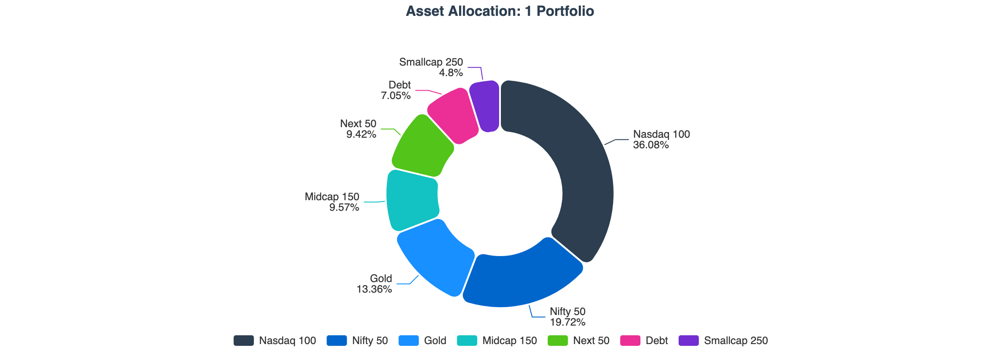
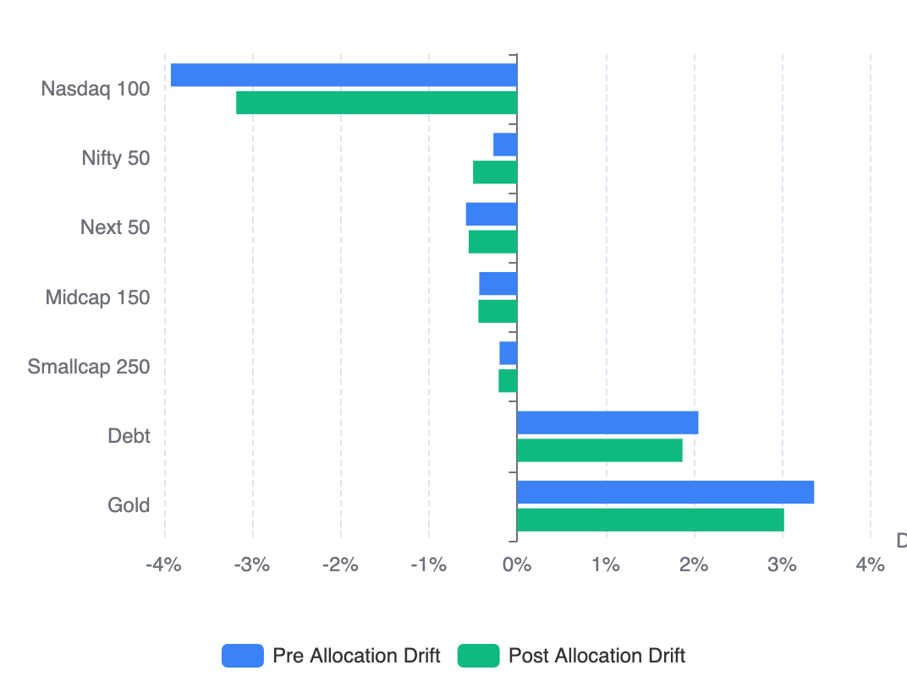
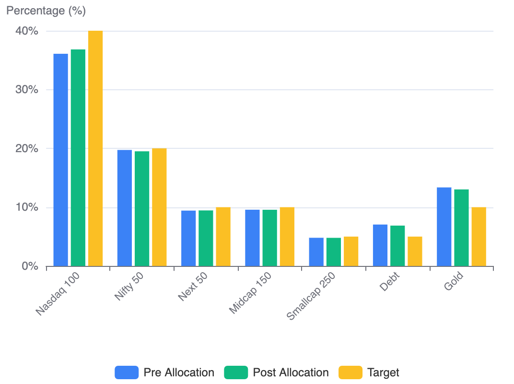
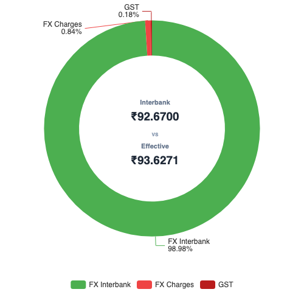
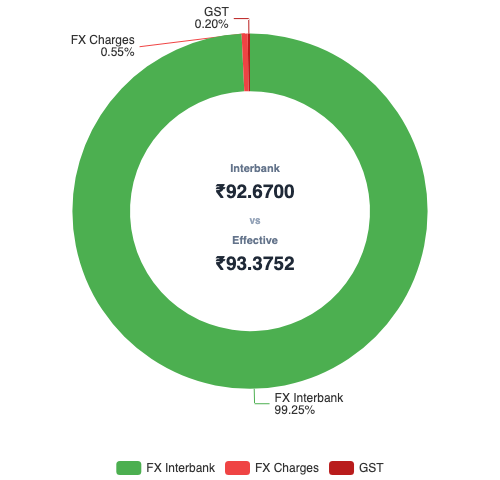

Used RealValue Portfolio to tag categories/asset classes to derive the XIRR.
Your data stays with you! All processing done in your browser!Currently supports CAMS + KFinTech combined PDF (Indian Mutual Funds) and IBKR (International Investments) You should check it out if you want to build your report!
This is the first edition of my annual “State of the Portfolio” report.
Every year in the first week of April, I plan to publish a transparent breakdown of my portfolio — including returns, allocation, and the strategy driving investment decisions.
Portfolio Summary
The portfolio is structured around four three distinct goal buckets, each with its own investment mandate and risk profile.
The overall portfolio delivered 12.63% XIRR.
| Goal | Purpose | XIRR | Allocation |
|---|---|---|---|
| 1 Portfolio | The Core Portfolio for Building Wealth | 16.48% | 92.04% |
| Emergency | To cater to emergencies | 7.46% | 5.08% |
| Travel | To cover domestic/international trips | 7.16% | 2.63% |
| Transactional Mistake that have to clean up | 5.62% | 0.25% | |
| Total | 12.63% | 100.00% |
Notes:
- Data includes investment done till April 2, 2026. XIRR computed using latest NAVs as on April 3rd morning
- Emergency Fund had significant historical volume in a liquid fund, so pulling down the overall XIRR
1 Portfolio — Asset Class Breakdown
100% equity on index funds/etfs now after a mega clean up and rebalancing. One time act to clean up my past behaviors.
| Asset Class | XIRR | Current Allocation | Target FY 2025-26 | Target TY 2026-27 |
|---|---|---|---|---|
| Nasdaq 100 | 26.57% | 36.08% | 35% | 40% |
| Nifty 50 | 1.45% | 19.73% | 20% | 20% |
| Next 50 | −23.33% | 9.42% | 10% | 10% |
| Midcap 150 | −22.14% | 9.57% | 10% | 10% |
| Smallcap 250 | −20.46% | 4.80% | 5% | 5% |
| Debt | 7.06% | 7.05% | 10% | 5% |
| Gold | 41.24% | 13.36% | 10% | 10% |
| Total | 16.48% | 100.00% | 100% | 100% |

You can look at this slide or watch this video to learn how I evolved asset allocation over time and also evolved after publishing the slide.
Notes:
- Target FY 2025-26 - Asset allocation target I set for Financial Year 2025-26
- Target TY 2026-27 - Asset allocation target I am setting for Tax Year 2026-27
Nasdaq 100 — 26.57% XIRR
The top equity performer, driven by sustained strength in US technology. I maintain strong conviction in long-term US technology leadership, which is why Nasdaq 100 forms the largest equity allocation in the portfolio. I always wanted to own these tech companies but, actual journey started only in June 2022. Where as domestic equity investments started in Jan 2016. I started investing into Nasdaq 100 via Indian Mutual Funds. New investments were limited whenever industry limits are reached. This probably led to some lost opportunity till I understood and executed via LRS route. See this video for more details.
FY 2025-26 target was at 35%, due to Tax gain harvesting/TCS opportunity cost harvesting ended up slightly more than the target. But, given that current years target at 40% this is still fine. I will write about this new harvesting nobody talking about separately.
Gold — 41.24% XIRR
The portfolio’s standout performer. Driven by global macro uncertainty and continued central bank buying, gold stands at 13.36% of the core portfolio — above the 10% target. Gold received zero new allocation in the investment cycle. Asset allocation prevented me from buying Gold at higher cost. So, all of growth came from earlier allocations. Following a zero churn model till portfolio hits a 10% overall drift. Didn’t sell the Gold as well. Will let it self correct naturally over the months.
Nifty 50 — 1.45% XIRR
Indian large-cap equities delivered near-flat nominal returns, reflective of the broader Nifty 50 performance through the year. Allocation is at 19.73%, close to the 20% target.
Midcap 150, Next 50, Smallcap 250 — Deeply Negative XIRR
These three segments had a difficult FY 2025-26. Mid and small cap indices corrected 25–40% from their September 2024 peaks. I will keep investing till they are underweights. If market value drops further I will be buying more.
Debt — 7.06% XIRR
Steady, predictable returns. Debt is underweight at 7.05% vs the FY 2025-26 target of 10% and received minimal/no allocation in the investment cycle as I clubbed it with Gold. Essentially Gold + Debt target is at 20%, when Gold grown too much allocation system prevented my buying debt as well. Anyway, I am reducing debt allocation in Tax Year 2026-27 to 5%. So, most likely won’t be buying debt further.
Over years, my defensive assets Gold(10%) + Debt(15% -> 10% -> 5%) went from 25% to 15%. As I am growing the contribution/portfolio, I am reducing my debt allocation. Eventually to settle down at 90% max equity. One idea I am thinking of is to link savings rate to equity allocation.
Emergency Fund
| Asset Class | XIRR | Allocation |
|---|---|---|
| Hybrid | 8.77% | 82.01% |
| Liquid | 6.93% | 14.44% |
| Arbitrage | 6.56% | 3.55% |
| Total | 7.46% | 100.00% |
The emergency fund holds three layers, each calibrated for liquidity and capital safety:
- Hybrid funds (conservative category): Core holding. Delivers stable 8.77% XIRR with very low volatility.
- Liquid funds: For immediate access if needed. 6.93% XIRR.
- Arbitrage funds: Tax-efficient short-term parking. 6.56% XIRR.
Overall 7.46% XIRR is a strong outcome for a portfolio designed purely for liquidity and capital preservation rather than growth.
Look at my emergency fund set up video here or slide here
Travel Fund
| Asset Class | XIRR | Allocation |
|---|---|---|
| Arbitrage | 7.10% | 100.00% |
| Total | 7.10% | 100.00% |
Entirely held in arbitrage funds — providing near-debt returns with equity fund taxation (LTCG at 12.5% after one year, versus debt fund taxation at slab rate). Well-suited for a medium-term spending goal.
Setup details here
Retirement Fund
| Asset Class | XIRR | Allocation |
|---|---|---|
| Active | 5.66% | 100.00% |
| Total | 5.66% | 100.00% |
Significant chunk was in funds tagged for retirement earlier. As part of the rebalancing I merged them into 1 Portfolio.
This allocation exists due to a transactional mistake. While placing an order for a Gold fund, I accidentally purchased an ELSS fund during a multitasking moment.
Since ELSS funds have a three-year lock-in, this position will remain until the lock-in period expires. It is currently the last actively managed fund remaining in the portfolio.
Using other instruments which not tracked here as well.
Transparency Note
This portfolio reflects my personal investment strategy and risk tolerance. It is not investment advice.
Drift Correction: Next Investment Allocation
The 1 Portfolio uses the RealValue Family SIP Allocator framework — monthly investments are directed exclusively to underweight assets, proportional to their deficit from target. No selling occurs during normal market conditions. New money does the rebalancing.
The table below consolidates the current state, next investment allocation and the new Tax Year 2026-27 target allocation in one view:
| Asset Class | FY25-26 Target | Current | Pre Drift | New Invest | Post Alloc | Post Drift | TY26-27 Target |
|---|---|---|---|---|---|---|---|
| Nasdaq 100 | 35.00% | 36.08% | −3.92% | 65.00% | 36.82% | −3.18% | 40.00% |
| Nifty 50 | 20.00% | 19.73% | −0.27% | 10.71% | 19.50% | −0.50% | 20.00% |
| Next 50 | 10.00% | 9.42% | −0.58% | 10.71% | 9.45% | −0.55% | 10.00% |
| Midcap 150 | 10.00% | 9.57% | −0.43% | 9.29% | 9.56% | −0.44% | 10.00% |
| Smallcap 250 | 5.00% | 4.80% | −0.20% | 4.29% | 4.79% | −0.21% | 5.00% |
| Debt | 10.00% | 7.05% | +2.05% | 0.00% | 6.87% | +1.87% | 5.00% |
| Gold | 10.00% | 13.36% | +3.36% | 0.00% | 13.02% | +3.02% | 10.00% |
| Total | 100.00% | 100.00% | 5.41% | 100.00% | 100.00% | 4.89% | 100.00% |


- FY 2025-26 Target: Target allocation under the outgoing financial year
- Current: Actual allocation as of today
- Pre Drift: Current deviation from FY 2025-26 target (sum of positive values = total drift)
- New Invest: Percentage of next monthly investment directed to each asset
- Post Alloc: Estimated allocation after the investment
- Post Drift: Estimated drift after investment
- TY 2026-27 Target: New target allocation effective this tax year
Key observations from this month’s allocation:
- Nasdaq 100 receives 65.00% of the next investment — the most underweight asset, and therefore the top priority
- Gold and Debt receive zero — both are overweight relative to their TY 2026-27 targets. By not buying them they drift towards the target allocation
- Total portfolio drift reduces from 5.41% to 4.89% after a single investment cycle — gradual, continuous improvement
- This is based on today’s state of the portfolio. Will rerun the tools with latest NAVs and monthly allocation before investing
FX Cost Optimization: Funding IBKR
I use RealValue FX Engine to find the true transaction cost and compare various rates.
Using to compute/track TCS for 12BAA form and to find the TCS opportunity cost.
For international investments via Interactive Brokers, the foreign exchange transaction cost on INR-to-USD conversion is a recurring drag that compounds over years of regular funding. Optimizing it matters.
Following comparison for three thousand dollars. ICICI (Current) vs FX Retail + BoB (Plan)
| Parameter | ICICI (Current) | FX Retail + BoB (Plan) |
|---|---|---|
| Interbank Rate | ₹92.67/USD | ₹92.67/USD |
| Bank Rate | ₹93.12/USD | ₹92.77/USD |
| FX Spread | ₹0.45/USD | ₹0.10/USD |
| Processing Fee | ₹1,000 + GST | ₹1,250 + GST |
| Effective Rate | ₹93.63/USD | ₹93.38/USD |
| Transaction Cost | 1.03% | 0.76% |
| Effective Rate |  |
 |
Switching to FX Retail with Bank of Baroda reduces the effective transaction cost from 1.03% to 0.76% — a saving of ~0.27% per transfer. The key driver is BoB’s exceptionally low FX spread of just ₹0.10/USD through FX Retail, compared to ₹0.45/USD with ICICI’s highly discounted rate on bank card rate.
Note that BoB’s processing fee is slightly higher (₹1,250 vs ₹1,000), but this is more than offset by the much lower FX spread on larger transfer amounts. As the transaction volume increases, the transaction cost will come down.
Next step — Direct IBKR: Currently operating via an indirect route. Moving to a direct IBKR account will reduce brokerage by an additional $2–3 per transaction, with no per-transaction intermediary overhead.
Essentially trying to invest $10/month extra, as per this projection this can lead to real (inflation adjusted) value of $24,330 higher portfolio in 22 years. Which is like ₹22 lakhs extra in today’s money. In long run optimizing these costs are very important.
Key Lessons From FY 2025–26
- Asset allocation matters more than running behind momentum
- Index funds reduce behavioural mistakes (see this)
- New-money rebalancing works better than selling (see this)
- FX costs compound significantly over long horizons (see this)
- Execution mistakes can happen, need to be careful
How I Manage This End to End
Three tools work together to cover the full investment workflow — from performance visibility to capital deployment to international funding.
1. RealValue Portfolio — Multi-Asset XIRR Reporting
RealValue Portfolio is the starting point every month. It ingests CAMS + KFinTech CAS PDFs (Indian mutual funds) and IBKR activity statements (international investments) directly in the browser — no data leaves the device.
Funds are tagged to goal buckets (1 Portfolio, Emergency, Travel, Retirement) and asset classes (Nasdaq 100, Nifty 50, Gold, etc.). The tool computes XIRR per category and asset class, giving a unified view of a multi-asset, multi-goal portfolio spread across Indian mutual funds and a US brokerage.
This is the report that drives everything in the sections above.
2. RealValue Family SIP Allocator — Monthly Drift Correction
RealValue Family SIP Allocator takes the current allocation (from the Portfolio tool) and the target allocation as inputs. It then computes how the next monthly investment should be split across asset classes to minimise drift — directing capital only to underweight assets, proportional to their deficit.
This is the Perpetual Rebalancing framework in practice:
- No selling during normal conditions
- New money does all the rebalancing
- Drift shrinks gradually, month by month
The drift correction table in this post is the direct output of this tool run against today’s portfolio state.
3. RealValue FX Engine — Forex Cost Estimation and Optimization
RealValue FX Engine computes the true all-in cost of an INR-to-USD transfer — bank rate, FX spread, GST on conversion, processing fee, and TCS — to arrive at the effective exchange rate and transaction cost percentage.
It is used to:
- Compare banks and routes (ICICI direct vs FX Retail + BoB) before executing a transfer
- Track the effective rate and TCS for each transaction (feeds into Form 12BAA)
- Quantify the long-run cost of suboptimal forex routing
The FX comparison table in this post was built using this tool.
How I Did This Before
Before building these tools, the same workflow was significantly more manual and error-prone.
For portfolio reporting and drift correction (tools 1 and 2), I maintained a custom Google Sheet — manually entering current asset values, tweaking formulas, and deriving the target allocation split. It worked, but was fragile and time-consuming to update each month.
For forex cost estimation (tool 3), I would navigate through the bank’s remittance portal all the way to the payment confirmation page — just to see the TCS and total debit amount — then back out, adjust the transfer amount, and repeat. A semi-binary search by hand to find the right INR amount that fully utilises the monthly international investment budget. Tedious and easy to get wrong.